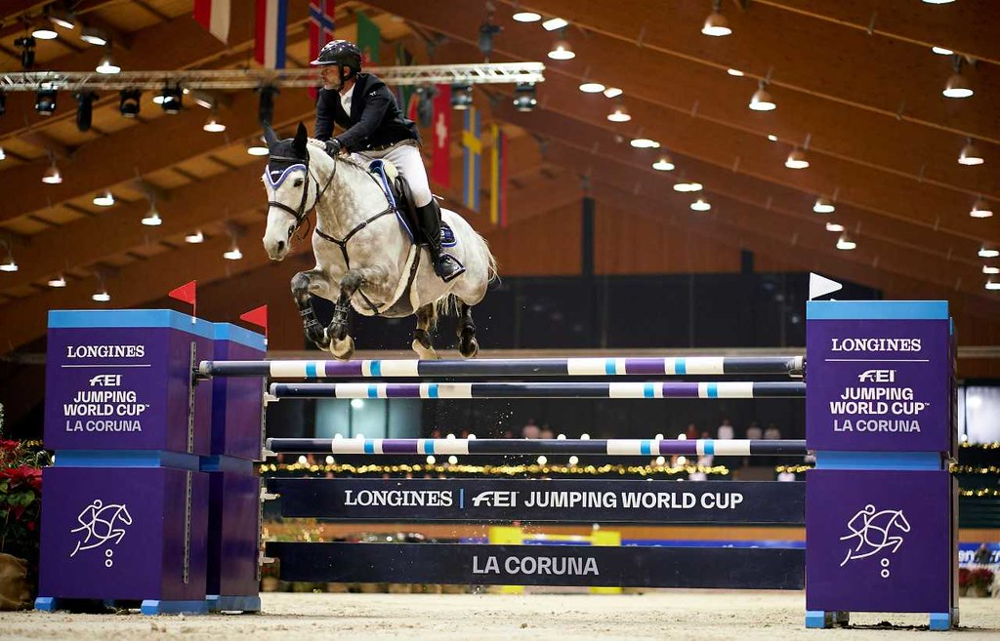

Bibici cuelga la silla: Grégory Cottard retira a su yegua y la deja en casa para criar
Grégory Cottard ha comunicado la retirada deportiva de Bibici, Selle Français de 15 años. La yegua seguirá en su yeguada, dedicada a la cría, y recibirá un homenaje en el Salon du Cheval de París.

Cottard dio la noticia en sus redes sociales con un vídeo que no muestra ningún recorrido, sino un trabajo en el picadero. «De todo lo que hemos vivido juntos, este es el momento en el picadero que más me ha marcado. Es el que cuento en mi libro y el que he elegido compartir hoy con vosotros», explicó el jinete francés, en referencia a su publicación Parce que je les aime.
El palmarés de la pareja pasa por tres citas con la camiseta de Francia: la Copa de Naciones de Sopot de 2021, en cuya victoria francesa contribuyeron, y, ya en 2022, los Campeonatos del Mundo de Herning y la final de la Copa del Mundo de Leipzig. A ello suman varios resultados en Grandes Premios internacionales.
Pero Cottard no quiso quedarse en las clasificaciones. «Con Bibici descubrí sensaciones que nunca antes había experimentado a caballo. Es esa relación la que me ha hecho evolucionar y la que cambió mi forma de montar», afirmó.
Los últimos años de la yegua estuvieron marcados por diversos periodos de descanso y algunos intentos de volver a competir. Ahora el capítulo se cierra del todo: Bibici se queda en las instalaciones de Cottard, donde ya ha tenido varios potros y donde seguirá dedicada a la cría.
«Voy a echar de menos esos momentos montando con ella. Se queda con nosotros en la yeguada, donde ya ha tenido potros, y seguiré yendo a verla todos los días, como hago ahora», aseguró el jinete.
La despedida pública llegará en el Salon du Cheval de París, que se celebra del 4 al 6 de diciembre, con un homenaje a su trayectoria. Cottard cerró su mensaje hablándole a ella: «Estoy orgulloso de lo que hemos hecho juntos, Bibici. Y estoy feliz de que sigas aquí, en casa».
Por Lucía Valdeolmos